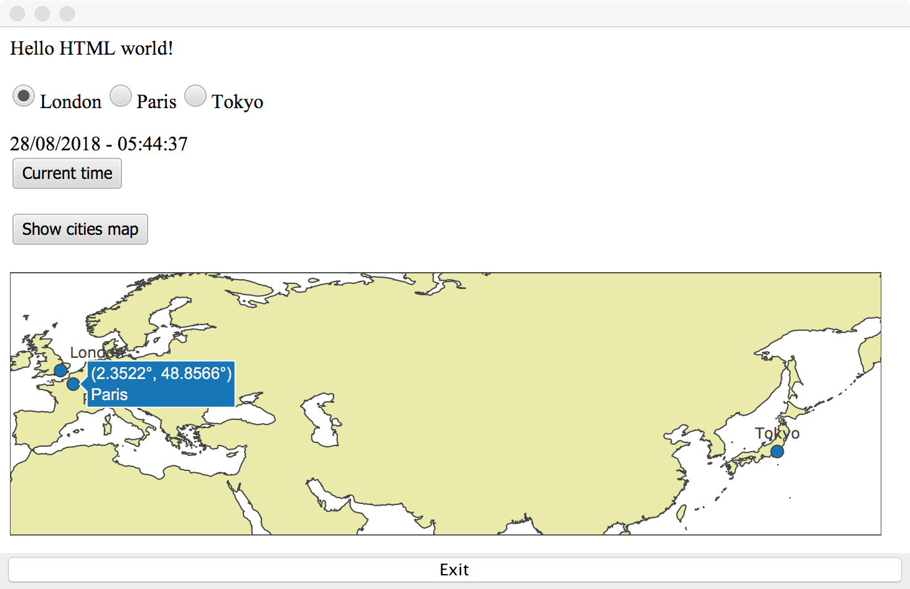

2018/08/28
In the previous article we added a time zone selection on our clock. Now, let's show those cities on a map! In order to do this I'm going to use the popular plot.ly library.

On the HTML side we need a div where the chart will be injected and a button to click:
<button data-bind="click: $root.showPlot">Show cities map</button>
<div id="plot"></div>
Next, we need to include the plot.ly Javascript file. We use the @JavaScriptResource annotation:
@JavaScriptResource("plotly-latest.min.js")
public class Clock {
...
Note that plotly-latest.min.js is a resource added in our Java package.
The HTML button calls showPlot which is a new method in our Clock class:
@Function
static void showPlot(ClockModel model) {
newPlot("plot", createGeoData(new String[]{"London", "Paris", "Tokyo"},
new double[]{51.5074, 48.8566, 35.6895},
new double[]{-0.1278, 2.3522, 139.6917},
new String[]{"top right", "bottom right", "top center"}),
createGeoLayout());
}
Note the @Function annotation. This method calls newPlot, createGeoData (which receives the list of cities and coordinates) and createGeoLayout.
newPlot is quite simple:
@JavaScriptBody(args = {"divName", "data", "layout"}, body = "Plotly.newPlot(divName, data, layout, {displayModeBar: false})")
public static native void newPlot(String divName, Object data, Object layout);
It just calls from Javascript the Plotly.newPlot method with the given arguments. Since this is something executed from the Javascript side, it is a native method and has a @JavaScriptBody.
How interesting to use the native modifier for this!
createGeoData creates the plot.ly configuration object based on the given arguments and it's again native:
@JavaScriptBody(args = {"cities", "lat", "lon", "textPosition"}, body = "return [{\n" +
" type: 'scattergeo',\n" +
" mode: 'markers+text',\n" +
" text: cities,\n" +
" lon: lon,\n" +
" lat: lat,\n" +
" marker: {\n" +
" size: 10,\n" +
" line: {\n" +
" width: 1\n" +
" }\n" +
" },\n" +
" name: 'Clock cities',\n" +
" textposition: textPosition,\n" +
" }]")
public static native Object createGeoData(String[] cities, double[] lat, double [] lon, String[] textPosition);
createGeoLayout is the least interesting as it just creates a static object with the chart properties:
@JavaScriptBody(args = {}, body = "return {\n" +
" autosize: false,\n" +
" height: 220,\n" +
" margin: {\n" +
" l: 0,\n" +
" r: 0,\n" +
" t: 0,\n" +
" b: 0,\n" +
" pad: 0\n" +
" },\n" +
" geo: {\n" +
" scope: 'world',\n" +
" resolution: 50,\n" +
" lonaxis: {\n" +
" 'range': [-10, 160]\n" +
" },\n" +
" lataxis: {\n" +
" 'range': [20, 70]\n" +
" },\n" +
" showland: true,\n" +
" landcolor: '#EAEAAE'\n" +
" }\n" +
" }")
public static native Object createGeoLayout();
That's it! As usual the full project is available at https://github.com/emilianbold/nbwt-clock-demo